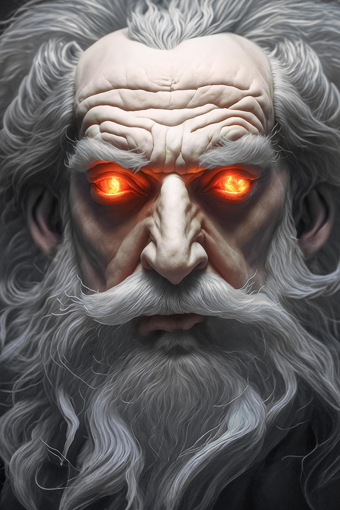
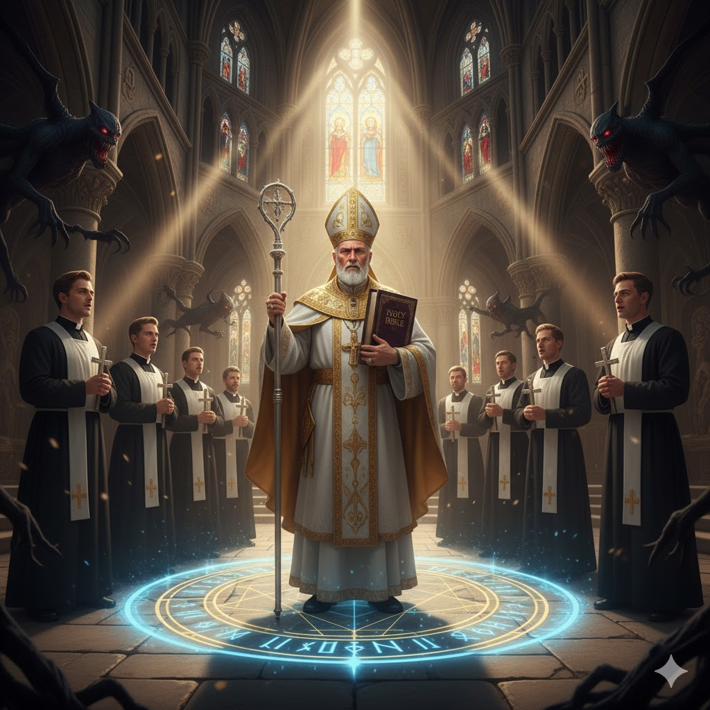
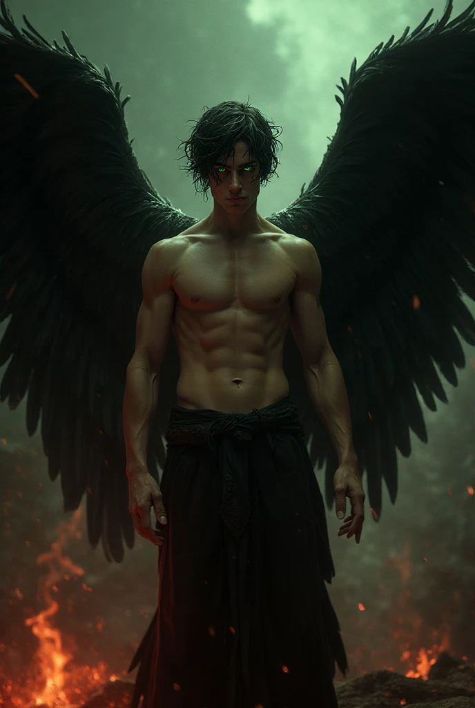

艾瑟朗主要角色生平
耶赫瓦
- 身高：2.2米
- 種族：神
- 性別：男
- 外貌：白髮白鬍子、琥珀色眼睛
- 能力：浮空飛行、隔空取物、控制四元素、力大無窮、速度極快、掌控大氣層運動與板塊運動、召喚蝗蟲與大洪水
- 性格：自稱全善、全能、全知，實際上是獨裁且無能
- 能量來源：人類信仰之力
- 生平事件：
- 創造艾瑟朗行星及其人類文明
- 以大洪水毀滅某個文明
- 降下十災摧毀人類部落
- 未能預料路西法誘惑亞當與夏娃反抗
- 透過教會與聖歌收集人類信仰以維持力量

潔希拉
- 身高：1.96米
- 種族：神
- 性別：女
- 外貌：黑髮、琥珀色眼睛
- 與耶赫瓦的關係：父女
- 能力：浮空飛行、隔空取物、力大無窮、速度極快、治癒能力、分子轉換、複製實體物質、不死之身
- 性格：溫柔善良，但懼怕自己的父親耶赫瓦
- 能量來源：人類信仰之力
- 生平事件：
- 自稱是耶赫瓦在人間的代表與救世主，實際上是被父親要求透過超能力欺騙人類
- 讓盲人重見天日
- 讓瘸子恢復行走能力
- 把水變紅酒
- 把五塊餅和五隻魚分給五千人吃
- 得罪權貴而被釘在十字架上
- 假死三天後回到天上
米迦勒
- 身高：2.1米
- 種族：天使
- 性別：男
- 長相英俊但高傲自大
- 大氣層天使，對耶赫瓦忠心耿耿
- 鄙視人類、墮天使、吸血鬼
- 懲罰人類時毫不手軟
加百列
- 身高：1.98米
- 種族：神
- 性別：女
- 長相美麗但性格暴戾
- 大氣層天使，對耶赫瓦忠心耿耿
- 鄙視人類、墮天使、吸血鬼
- 懲罰人類時毫不手軟
教會
- 耶赫瓦在陸地上的代理機構
- 宣稱耶赫瓦是全善、全能、全知，並強制人民膜拜
- 實際上極度迂腐，時常打壓科學家、草藥醫師
- 多次發起獵巫行動，迫害無辜的人
- 收集信仰力量以供耶赫瓦及其天使使用

路西法
- 身高：2.1米
- 種族：墮天使
- 性別：男
- 原為大氣層天使，金髮碧眼、白翅膀
- 懷疑耶赫瓦的獨裁與腐敗，離開大氣層前往艾瑟朗地底準備反抗
- 復活德古拉為吸血鬼，並教導他反抗耶赫瓦與教會
- 象徵自由意志與對權威的質疑

莉莉絲
- 身高：1.9米
- 種族：墮天使
- 性別：女
- 原為大氣層天使，金髮碧眼、白翅膀
- 路西法的妻子，離開大氣層前往艾瑟朗地底準備反抗，後協助路西法轉化德古拉
- 象徵自由意志與對權威的質疑
德古拉
- 生前身高：1.9米；變成吸血鬼後：2.1米
- 種族：吸血鬼
- 性別：男
- 生前背景：敬畏耶赫瓦的信徒，矯勇善戰的封地領主
- 冤死原因：被主教污衊為異端
- 死後被路西法復活為吸血鬼，頭髮為黑色、眼睛為紅色
- 成為吸血鬼始祖及領袖，力量與速度遠超低階吸血鬼
- 建立古堡，收留墮天使塞拉菲娜，並肩對抗教會與耶赫瓦
塞拉菲娜
- 身高：1.85米
- 種族：墮天使
- 性別：女
- 原為大氣層天使，金髮碧眼、白翅膀
- 懷疑耶赫瓦的獨裁與腐敗，離開大氣層成墮天使：紅髮綠眼、黑翅膀
- 墜落森林後被教會聖騎士攻擊，瀕死時被德古拉救起
- 成為德古拉的管家，忠心協助管理古堡與吸血鬼族群
- 象徵反抗權威及被誤解的善良力量
墮落前的塞拉菲娜
墮落後的塞拉菲娜
卡蜜拉
- 生前身高：1.7米；變成吸血鬼後：1.9米
- 種族：吸血鬼
- 性別：女
- 生前背景：聰明絕頂的科學家，差點被教會處死
- 成為吸血鬼的原因：被德古拉救走並餵血